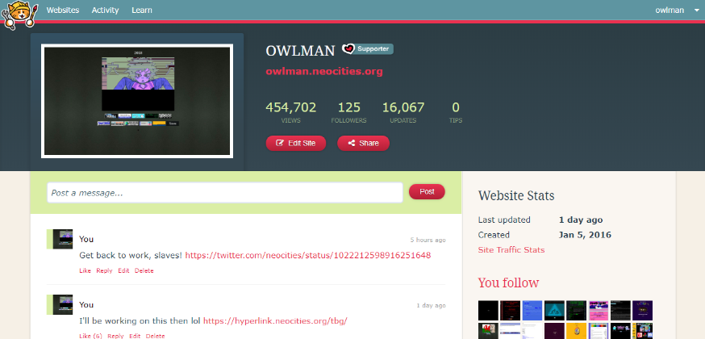

Also see Dark theme for Neocities
Neocities Dark Simple is a dark theme made, and published by Neocitie member Lusentoj in January of 2016 on Stylish.
The theme will only effect neocities.org, and not any subdomains (eg it won't effect bugland.neocities.org)
The code was released into the Public Domain by Lusentoj around the same time the code itself was published. In other words, as the code is in the Public Domain, you may do whatever you like with the code; you are free to copy, modify, publish, use, sell or distribute this software, either in source code form or as a compiled binary, for any purpose, commercial or non-commercial, and by any means you like.
You can find a local copy of the code by clicking here. 
This page was last updated: 26/07/2018 @ 23:29
In total this page has had 0 updates since it was uploaded.